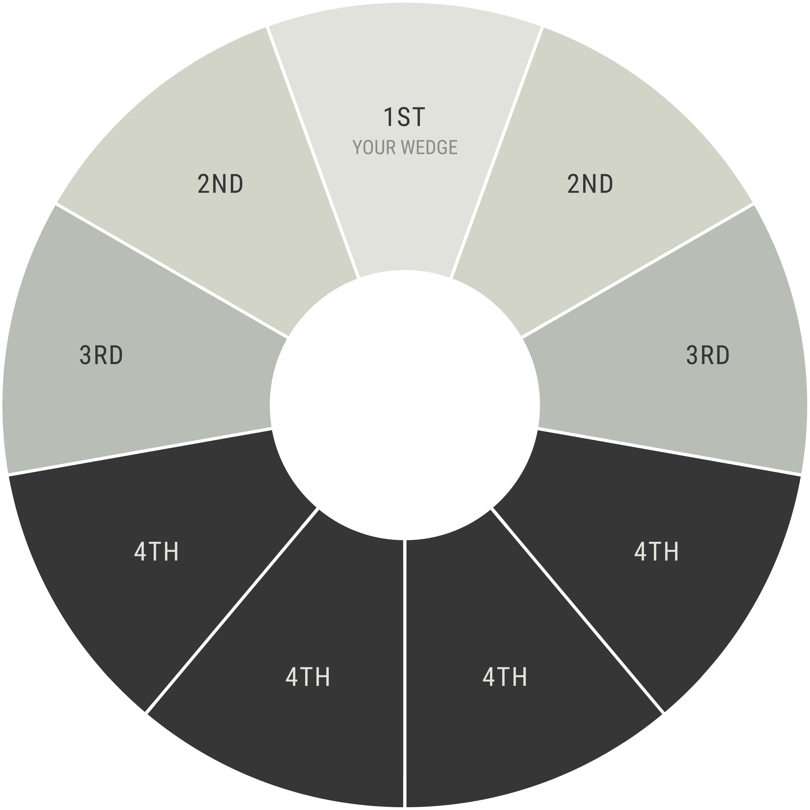
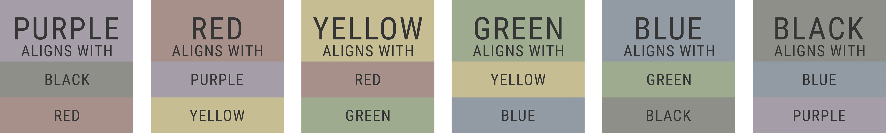

Alignments
Alignments are a cooperative ability separate from, but still influenced by, the powers of your Soul Class. Each Soul Class has two different alignments that they can do, each with a different Soul Class and a different power, or outcome. What determines which Soul Class can align with which, is their placement on the Soul Wheel. The two Soul Classes that frame your own are the ones that you can align with. The table below shows who can align with whom:
The Alignment abilities are not the same as ones in other Campaigns, so for the moment what each of these alignments can do are unknown. However, they will be revealed here as they are discovered in the Campaign.
Characters also cannot purposefully use alignment abilities until they are Level 5, which means this is more of a later-game mechanic!